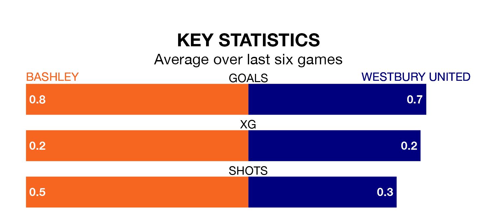

Tuesday's late match at the Recreation Ground sees two relegation candidates play each other, as 18th-ranked Bashley host 17th-placed Westbury United.
Bashley have picked up 18 points from their first 18 Southern League Division One – South games, with four wins and six draws.
That is three points less than Westbury have collected, having won five and drawn six.
Bashley are in bad form in Southern League Division One South, with no wins and three draws from their last six games.
With a win and two draws over that period, Westbury's form is slightly better – they have taken five points from 18, compared to the hosts' three.
With 21 goals in 18 games so far this season, Bashley are the league's second-lowest scorers with 1.2 goals per game. And they are conceding more than average, letting in 34 goals at a rate of 1.9 per game.
United are also below average scorers, with 1.3 goals per game, compared to a league average of 1.6. They have conceded 1.8 goals per game.
Over the last two years, Bashley and Westbury have played each other twice. Westbury won one of them and they drew the other.
Their last meeting was on April 18, when they played out a 0-0 draw.
Bashley's last match was on Saturday, a 0-0 draw against Bristol Manor Farm.
Westbury drew 0-0 with Willand Rovers last time out, on January 13.
Updated: 09:18 (UTC), 23/01/24